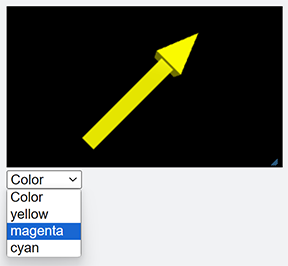

Menus¶
A menu widget provides a drop-down menu.
- menu(bind=myfunction, choices=choicelist)¶
- Parameters:
bind (function) – The function to be called when a menu selection is made.
choices (list) – The list of options (as strings) to appear on the menu.
selected (string) – The text of the currently selected menu option.
index (scalar) – The list position of the currently selected option.
disabled (boolean) – If True, menu is grayed out and does not respond.
delete() –
mymenu.delete()deletes the menu.
The following code creates a menu to change the color of an object:
pointer = arrow(pos=vec(-3,-3,0), axis=vec(6,6,0), color=color.white )
def changeattr(evt):
console.log(evt)
if evt.index < 1:
pass
elif evt.index is 1:
pointer.color=color.yellow
elif evt.index is 2:
pointer.color=color.magenta
elif evt.index is 3:
pointer.color=color.cyan
choicelist = ['Color', 'yellow', 'magenta', 'cyan']
menu( choices=choicelist, bind=changeattr )
Menu Event Attributes¶
The argument of the event handler function (‘evt’, in the code above) will have the following attributes (properties of the menu):
evt.indexevt.selectedevt.disabled
Additionally, any attributes you have created for the widget (for example, name or id), will be available as attributes of evt.
See also